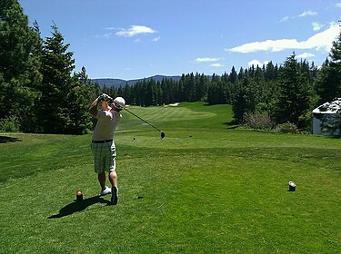

An overview of the sport of Golf, covering its origins, gameplay, and equipment.

The origin and history of golf trace back to 15th century Scotland, marking it as the birthplace of the modern game. While its ancient roots are debated, golf's documented inception in Scotland is characterized by King James II's 1457 ban due to its distraction from archery. The game evolved over centuries, with the Old Course at St Andrews, established in 1764 with 18 holes, becoming a sacred site for golfers. Golf's structure and rules have since solidified, making it a globally revered sport.
A golf course consists of either 9 or 18 holes, each with a teeing ground or "tee box" that is set off by two markers showing the bounds of the legal tee area, fairway, rough and other hazards, and the putting green surrounded by the fringe with the pin (normally a flagstick) and cup.
The levels of grass are varied to increase difficulty, or to allow for putting in the case of the green. While many holes are designed with a direct line-of-sight from the teeing area to the green, some holes may bend either to the left or to the right. This is commonly called a "dogleg", in reference to a dog's knee. The hole is called a "dogleg left" if the hole angles leftwards and "dogleg right" if it bends right. Sometimes, a hole's direction may bend twice; this is called a "double dogleg".
A regular golf course consists of 18 holes, but nine-hole courses are common and can be played twice through for a full round of 18 holes.
Early Scottish golf courses were primarily laid out on links land, soil-covered sand dunes directly inland from beaches. The word "links" derives from the Scots language and the Old English word hlinc ("rising ground, ridge"): traditionally these are coastal sand dunes but sometimes open parkland. This gave rise to the term "golf links", particularly applied to seaside courses and those built on naturally sandy soil inland.
The first 18-hole golf course in the United States was on a sheep farm in Downers Grove, Illinois, in 1892. The course is still there today.
Every round of golf is based on playing a number of holes in a given order. A "round" typically consists of 18 holes that are played in the order determined by the course layout. Each hole is played once in the round on a standard course of 18 holes. The game can be played by any number of people, although a typical group will have 1–4 people playing the round. The typical amount of time required for pace of play is two hours for a 9-hole round and four hours for an 18-hole round.[citation needed]
Playing a hole on a golf course is initiated by putting a ball into play by striking it with a club on the teeing ground (also called the tee box, or simply the tee). For this first shot on each hole, it is allowed but not required for the golfer to place the ball on a tee prior to striking it. A tee is a small peg that can be used to elevate the ball slightly above the ground up to a few centimetres high. Tees are commonly made of wood but may be constructed of any material, including plastic. Traditionally, golfers used mounds of sand to elevate the ball, and containers of sand were provided for the purpose.[citation needed] A few courses still require sand to be used instead of peg tees, to reduce litter and reduce damage to the teeing ground. Tees help reduce the interference of the ground or grass on the movement of the club making the ball easier to hit, and also places the ball in the very centre of the striking face of the club (the "sweet spot") for better distance.[citation needed]
When the initial shot on a hole is intended to move the ball a long distance, typically more than 225 yards (210 m), the shot is commonly called a "drive" and is generally made with a long-shafted, large-headed wood club called a "driver".[citation needed] Shorter holes may be initiated with other clubs, such as higher-numbered woods or irons. Once the ball comes to rest, the golfer strikes it again as many times as necessary using shots that are variously known as a "lay-up", an "approach", a "pitch", or a "chip", until the ball reaches the green, where the golfer then "putts" the ball into the hole (commonly called "sinking the putt" or "holing out"). The goal of getting the ball into the hole ("holing" the ball) in as few strokes as possible may be impeded by obstacles such as areas of longer grass called "rough" (usually found alongside fairways), which both slows any ball that contacts it and makes it harder to advance a ball that has stopped on it; "doglegs", which are changes in the direction of the fairway that often require shorter shots to play around them; bunkers (or sand traps); and water hazards such as ponds or streams.[17]
In stroke play competitions each player plays their ball until it is holed no matter how many strokes that may take.[citation needed] In match play it is acceptable to simply pick up one's ball and "surrender the hole" after enough strokes have been made by a player that it is mathematically impossible for the player to win the hole.[citation needed] It is also acceptable in informal stroke play to surrender the hole after hitting three strokes more than the "par" rating of the hole (a "triple bogey" – see below); while technically a violation of Rule 3–2, this practice speeds play as a courtesy to others, and avoids "runaway scores" and excessive frustration.[citation needed]
The total distance from the first teeing ground to the 18th green can be quite long; total yardages "through the green" can be in excess of 7,000 yards (6,400 m), and when adding in the travel distance between the green of one hole and the tee of the next, even skilled players may easily travel 5 miles (8.0 km) or more during a round. At some courses, gas or electric golf carts are used to travel between shots, which can speed-up play and allows participation by individuals unable to walk a whole round. On other courses players generally walk the course, either carrying their bag using a shoulder strap or using a "golf trolley" for their bag. These trolleys may or may not be battery assisted. At many amateur tournaments including U.S. high school and college play, players are required to walk and to carry their own bags, but at the professional and top amateur level, as well as at high-level private clubs, players may be accompanied by caddies, who carry and manage the players' equipment and who are allowed by the rules to give advice on the play of the course.[22]
Main article: Rules of golf
Arnold Palmer in 1953
The rules of golf are internationally standardised and are jointly governed by The R&A, spun off in 2004 from The Royal and Ancient Golf Club of St Andrews (founded 1754), and the United States Golf Association (USGA).[23][24] With the aim of simplifying the rules, in 2017 the USGA and R&A undertook a complete rewrite.[25] The new rule book came into effect in January 2019.[26]
The underlying principle of the rules is fairness. As stated on the back cover of the official rule book:
Play the ball as it lies, play the course as you find it, and if you cannot do either, do what is fair.
There are strict regulations regarding the amateur status of golfers.[27] Essentially, anybody who has ever received payment or compensation for giving instruction, or played golf for money, is not considered an amateur and may not participate in competitions limited solely to amateurs. However, amateur golfers may receive expenses that comply with strict guidelines and they may accept non-cash prizes within the limits established by the Rules of Amateur Status.
In addition to the officially printed rules, golfers also abide by a set of guidelines called golf etiquette. Etiquette guidelines cover matters such as safety, fairness, pace of play, and a player's obligation to contribute to the care of the course. Though there are no penalties for breach of etiquette rules, players generally follow the rules of golf etiquette in an effort to improve everyone's playing experience.
Penalties
Main article: Penalty (golf)
Penalty strokes are incurred in certain situations and are counted towards a player's score as if there were extra swing(s) at the ball. Either one or two strokes are added for most rule infractions or for taking relief from various situations, with the "general penalty" defined as two-strokes, and disqualification for severe or repeated rule breaches. Examples include:
A lost ball or a ball hit out of bounds (OB) results in a penalty of one stroke and distance (Rule 18.2).
With the exception of certain circumstances, a one-stroke penalty is assessed if a player causes their ball to move (Rule 9.4).
A one-stroke penalty is assessed if a player elects to take relief when their ball comes to rest within a red or yellow penalty area (Rule 17), or from an unplayable lie (Rule 19).
A two-stroke penalty is incurred for making a stroke at the wrong ball (Rule 6.3c).
A two-stroke penalty is incurred for hitting a fellow player's ball if both balls lay on the green prior to the stroke (Rule 11.1a).
Disqualification can result from cheating, signing for a lower score, or failing to adhere to one or more rules that lead to improper play.[28]